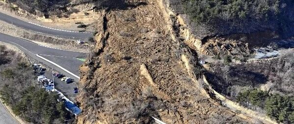

新论文：基于实测地震动的近实时地震滑坡预测方法(并附源程序)

论文链接：
https://www.sciencedirect.com/science/article/pii/S0098300421000236
开源代码：
https://github.com/QingleCheng/Near-real-time-prompt-assessment-for-regional-EQIL
00
太长不看版
地震滑坡快速预测对降低人员伤亡和经济损失有着重要意义。本文基于Newmark刚体滑块法和实测地震动，提出了近实时地震滑坡快分析方法。该方法通过实测台站地震动，利用地震动场构造方法确定目标区域地震动场；根据所提出的GLiM岩性数据和工程岩体的力学性质的对应关系确定目标处岩土体力学性质；利用Newmark刚体滑块法确定每个位置处发生滑坡的概率。通过与实际地震和其他地震滑坡分析方法的对比，验证了所提出方法的可靠性和合理性。
在刚刚发生的日本福岛7.1级地震中，采用本文方法对本次地震滑坡进行了评估，分析结果参见（RED-ACT: 2月13日日本福岛县7.1级地震破坏力分析），重点区域的分析结果如图01所示，美国地质调查局给出的分析结果如图02所示，其中红色方框为实际发生滑坡的区域（图03）。可以看出，我们的分析结果表明该区域附近存在发生滑坡的高风险区，而PAGER分析结果表明该区域发生滑坡的概率非常低。

图01 本方法对0213日本福岛7.1级地震滑坡分析结果

图02 PAGER系统对本次日本地震滑坡的分析结果

图03 实际滑坡(图片来源于网络)
01
研究背景
地震后往往会导致滑坡的发生，如1999年的集集地震，2008年的汶川地震等，滑坡会对山区的房屋、河道、道路以及管线等产生影响，往往会造成巨大的经济损失和人员伤亡。地震滑坡快速预测对降低人员伤亡和经济损失有着重要意义。
目前地震滑坡速报中常用的分析方法有：(1) 基于Newmark位移公式的预测方法，典型代表方法为美国地质调查局的PAGER系统里所推荐的Godt模型；(2) 基于历史地震滑坡的数据模型，该方法的典型代表为PAGER系统目前所采用的分析方法；(3) 基于模糊逻辑的分析模型。但现有研究存在如下问题：基于Newmark位移公式的区域地震滑坡方法以地震动强度指标为输入，可选择的地震动指标的组合很多且难以全面考虑地震动的全部特性；基于机器学习的方法依赖历史地震滑坡数据，由于数据集有限，往往会导致某些数据集起主导作用，从而高估地震滑坡风险；基于模糊逻辑的分析方法中指标权重的选取主观性较大。
而Newmark刚体滑块分析方法广泛用于地震滑坡分析中，该方法基于地震动时程，能充分考虑地震动的特性，不依赖于历史地震动数据，适用于90%的地震滑坡情形，为地震滑坡分析中的主导方法。但现阶段尚无该方法在区域地震滑坡快速分析中的应用，因此本文将基于Newmark刚体滑块分析方法，提出一套客观且不依赖历史数据的地震滑坡快速预测方法。
02
提出的方法
本研究基于实测地震动记录和Newmark刚体滑块位移法，提出了一套地震滑坡近实时预测方法，该方法的分析框架如图1所示，主要包括以下三个模块：
（1）模块1：地震动时程场构造
通过强震台网快速获取灾区震中附近实测地面运动加速度记录，并基于地震动反应谱构建方法和连续小波变换构造目标区域地震动场；
（2）模块2：滑坡分析模型参数确定
根据所提出的GLiM全球岩性数据和工程岩体的力学性质的对应关系确定目标处岩土体的力学性质；根据全球数字高程模型通过求解坡度的算法确定目标区域坡度分布；
（3）模块3：Newmark刚体滑块法
对目标区域进行栅格化，输入栅格处地震动记录，对岩土体进行Newmark刚体滑块法分析，即可得每个栅格处刚体位移，即可得到本次地震滑坡发生概率的预测结果，并可在GIS 平台对分析结果进行展示。
以下将对框架中各方法进行介绍。

图1 基于实测地震动的近实时地震滑坡预测方法框架
2.1 适用于区域地震滑坡输入的地震动时程场快速构建方法
本研究采用基于实测地震记录的区域地震动场模拟方法构建地震滑坡分析的地震动输入场。该方法主要包括三个步骤，如图 2所示：(1) 根据强震台网获取灾区实测地震动记录；(2) 根据台站记录构建目标插值台站组，对实测台站记录反应谱进行反距离加权插值，确定台站覆盖区域内未知点的地震动反应谱；(3) 选取插值台站组内距离未知点最近的台站记录作为种子地震动，根据步骤2得到的反应谱和连续小波变换修正种子地震动得到未知点处的地面运动。在确定未知点处反应谱后，本研究利用连续小波变换修正最近点台站记录得到未知点处的地面动，详细方法可以参考新论文：基于实测地震记录的区域地震动场模拟方法。

图2 地震动场快速构建方法
2.2 区域范围Newmark刚体滑块法模型参数确定
2.2.1 岩性数据
本文所采用广泛应用的GLiM (global lithological map)数据库获取目标区域的岩性分类，该数据库整合了92个区域高分辨率的岩性数据库，提供了全球范围的岩性矢量分布图，GLiM给出了每种分类的详细解释及所包含的细分类别，如松散的沉积物(Unconsolidated sediment, su)包含沙丘、冲积沉积物、黄土等。典型的示例地区日本的岩性分布如图3所示。

图3 日本主要区域岩性分布
本文根据文献将岩土体分为四类（称之为工程岩土体分类），即坚硬岩组、较坚硬岩组、较软岩组和极软岩组，每种分类下详细的岩石种类及岩土体的力学性质（内聚力、内摩擦角和重度）如表1所示，并且内聚力和内摩擦角服从高斯分布，均值和标准差见表1。极软岩组包含黏土层、湖河沉积物等，与GLiM数据库中的松散的沉积物(su)对应，以此类推，本文建立了GLiM数据库分类与工程岩土体分类的对应关系，如表1所示，根据所建立的对应关系即可利用GLiM数据库确定目标区域岩土体的力学性质。同时，可以通过蒙特卡罗模拟来考虑岩土体力学参数的不确定性，建议每次分析进行1000次模拟，取中位值作为滑坡刚体位移的计算结果。
表1 工程岩土体分类与GLiM岩性数据库分类对应关系

2.2.2 坡度数据
坡度数据的获取是计算Newmark刚体滑块法的关键之一，本文采用广泛使用的ASTER GDEMV2 数字高程模型数据库获取目标区域的高程数据，该数据库提供了全球范围内空间分辨率为30米的数字高程模型，通过GIS平台进行求解坡度处理，即可得到坡度分布。
2.3 区域地震滑坡分析模型
本文采用Newmark刚体滑块法作为区域地震滑坡的分析模型，该方法假设滑坡体内部不发生位移（图4(a)），作用在滑块上的加速度超过滑坡体临界加速度ac的部分将会产生永久位移（图4(b)），如式(1)所示，根据永久位移D的大小判定滑坡发生风险的高低。滑坡体临界加速度ac根据式(2)(3)来确定。


图4 Newmark刚体滑块法示意图
Newmark刚体滑块法需要地震动时程作为输入，为简化分析，基于不同地震动强度指标和地震动数据库的Newmark位移公式相继被提出。Newmark位移公式利用大量地震动记录作为Newmark刚体位移法的输入，设定不同的屈服加速度，得到滑块永久位移与地震动强度指标的关系。本文选取了9组广泛使用的Newmark位移公式，公式基本介绍如表 2所示，采用NGA-West1地震动数据库中10,653条地震动（矩震级：4.2-7.9）作为输入，以不同比例的地震动PGA作为滑坡体的屈服加速度，对比分析了Newmark位移公式与Newmark刚体滑块法的分析结果，其中比值在0.5~1.5之间地震动所占比例如表 3所示。从表 3可以看出，Newmark位移公式基本能把握Newmark刚体滑块的位移趋势，但也难以全面考虑不同地震动和屈服加速度下的滑块位移的计算结果。总体上，Newmark位移公式中采用的地震动强度指标越多，其位移公式在不同地震动和屈服加速度上的表现越好，例如Saygili08_3，这也进一步说明了时程分析的必要性。由于不同位移公式基于不同的地震动数据库，因此，这些公式在应用的时候需要考虑公式应用范围的限制（如震级范围等），而这往往会限制位移公式在地震滑坡预测中的应用。比如，Hsieh11_1和Hsieh11_2模型因为回归数据范围较小的原因导致其表现不如其他模型。
表2 分析对比所采用的Newmark位移模型

表3 Newmark位移公式结果对比

03
案例分析
本节以20180906北海道地震为例说明本文方法的具体实现过程。本次地震造成的滑坡主要发生在图5所示的四个台站构成的四边形内部，因此选取该区域作为本案例的分析区域。通过日本强震台网K-NET/ KiK-net获取了4个台站的地震动记录。运用图5中四个台站构建该四边形内部地震动场，建立0.82 km×1.11 km的网格点，利用地震动场构造方法生成每个网格点处的地震动。为实现近实时震害评估，对于四边形内部每个栅格点（分辨率约为160 m），利用所构造的地震动场的网格点处最近的地震动作为输入，进而运用Newmark刚体滑块法计算每个栅格点的滑坡体位移，即可以给出本次地震滑坡的分析结果。
图5和6给出了本文的预测结果与实际震后滑坡的分布的对比，以及与其他广泛使用的滑坡预测模型分析结果的对比，几种分析模型之间的对比如表4所示。为了定量说明不同分析方法与实际滑坡分布的相似程度，采用物体检测中广泛使用的准确度指标IoU对不同方法进行了对比，如表5所示。从图5、6和表5中可以看出，本文的预测的滑坡分布相比于PAGER和Godt模型预测结果，与实际地震滑坡分布更为接近。
表4 地震滑坡分析模型对比


图5 本文计算结果与PAGER模型结果及实际滑坡分布对比

图6 本文计算结果与Godt模型结果及实际滑坡分布对比
表5 不同方法预测结果与实际滑坡分布结果吻合度

04
结论
本文基于实测地面运动记录和Newmark刚体滑块法，提出了一套近实时的地震滑坡预测方法。该方法：通过强震台网获取震后灾区实测地面运动记录，并基于反距离权重插值和连续小波变换构造目标区域地震动场；根据数字高程模型得到目标区域坡度分布；根据所提出的GLiM岩性数据和工程岩体的力学性质的对应关系确定目标处岩土体力学性质；利用Newmark刚体滑块法确定每个位置处是否发生滑坡。通过311日本地震和2016年熊本地震对本文方法进行了验证，最后以2018年北海道地震为例说明了本文方法的具体实现过程。主要结论有：
(1)本文方法基于实测地震动和Newmark刚体滑块法，能够得到较为准确的震害预测结果；
(2)本文所提出的方法基于实测地震动，相较于基于地震动强度指标的传统方法更能充分考虑地震动的特性对滑坡的影响；
(3)本文方法能在震后短时间内给出滑坡计算结果，为震后灾区地震滑坡的预测提供了重要手段。
可联系作者获取原文：

程庆乐
---End---
相关研究

新论文：抗震&防连续倒塌：一种新型构造措施
长按识别二维码，关注我们的科研动态